| 日付 | 2016年11月20日（日） |
|---|---|
| 山域 | 西上州 |
| メンバー | 家族（妻、長女・5歳、長男・3歳） |
| 山行形態 | 子連れ日帰り |
| アクセス | 車 |
| ルート (Map) | 上底瀬駐車場 (9:04) - (9:43) 鷹ノ巣山 - (10:41) 観音岩 (11:21) - (12:20) 不動寺 (12:57) - (13:29) 上底瀬駐車場 |
娘が最近山に退屈しているため、岩場のある山に行くことにする。
息子では登ることが無理そうなので、何年後かに登ることを考えていたが、
息子は最近あまり歩かないため、キャリアで背負うこと前提で行くことにする。
上底瀬の駐車場に車を停める。標高550m。
山の反対側の不動寺からのルートを歩く人が多いため、こちらは人影が無い。
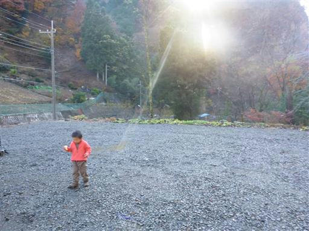
背後に岩山が見えている。西上州らしい景観だ。
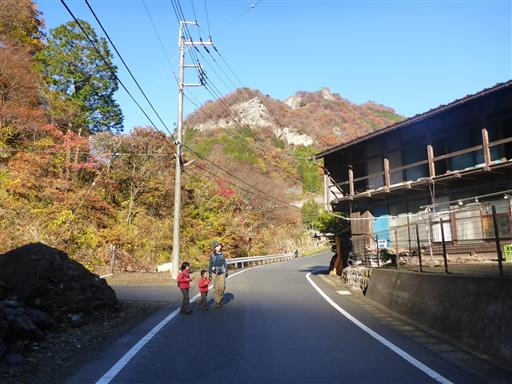
駐車場のすぐ側に登山口がある。
人気がない薄暗い登山口で、一歩を踏み出す気がしない。

いきなりの急坂を登りきると谷筋の暗い登山道になる。
ガードレールを2次利用して作られた簡易な橋が架かっている。
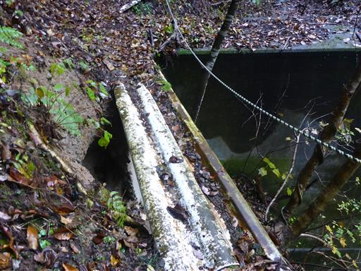
ガードレールなので頑丈なはずだが、見た目が薄い板で怖いため慎重に渡る。
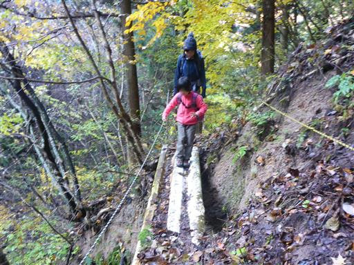
急坂にロープが現れる。初っ端から難しい登山道が続く。

しばらく登ると明るい尾根に出る。分岐点から寄り道して鷹ノ巣山方面に足を向ける。
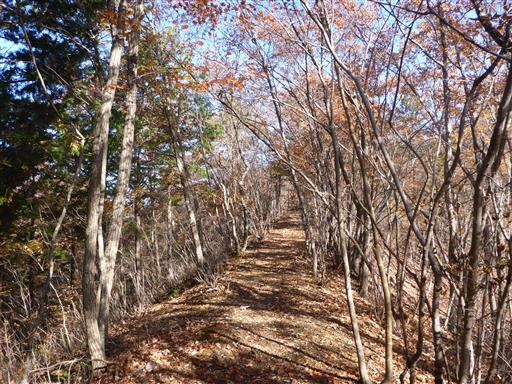
次第に痩せ尾根になってくる。
両脇に木はあるが落っこちないように気を付けて歩く。
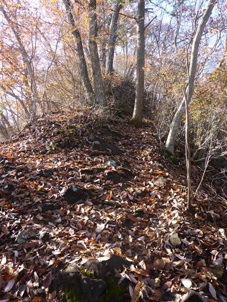
鷹巣ノ山の狭い山頂に到着する。標高767m。目の前は断崖だ。
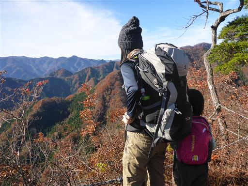
崖の向こうに西上州の山々の展望が広がる。
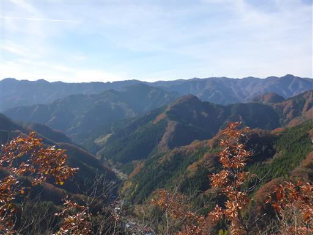
狭い山頂なので、滞在は僅かで早々に引き返す。痩せ尾根を慎重に下る。
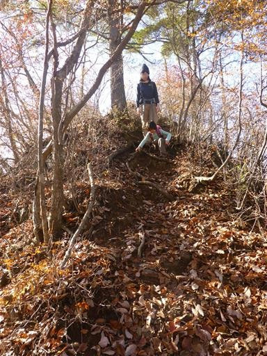
目の前に岩壁が見えてきた。この辺りはかなり岩がちな地形が続いている。
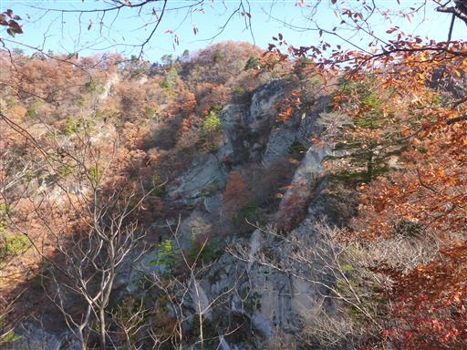
歩きにくい登山道が続く。急坂、痩せ尾根、岩場と気が抜けない。
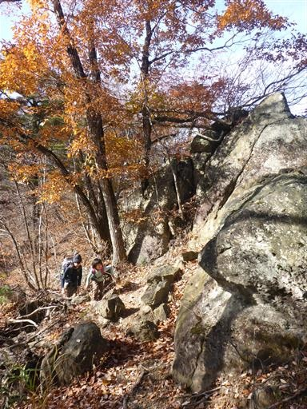
多くの岩壁に囲まれた谷が眼下に広がっている。
この谷は九十九谷と呼ばれている。
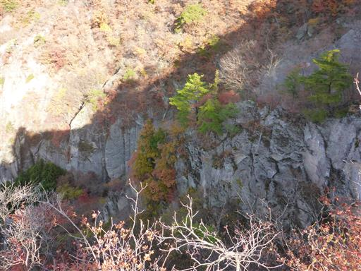
鋭い岩尾根に出て来る。難易度が高いわけではないが極めて高度感がある。
戸隠山の蟻ノ戸渡りのようだ。
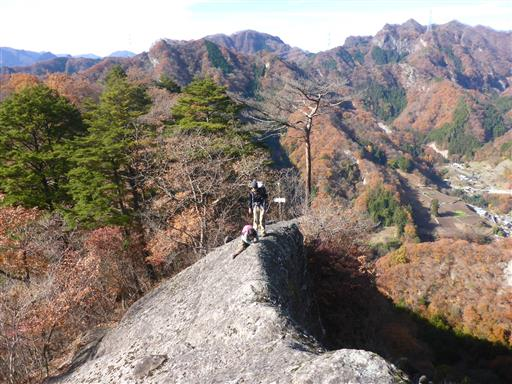
九十九谷を覗き込む。深い谷まで断崖が続いている。

眼下に登山口近くの集落が望める。岩がちな山々に囲まれた小さな集落だ。
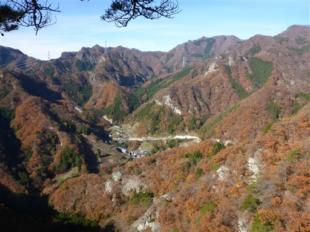
まだまだ岩場は続く。娘はそれなりに楽しんで登っている。
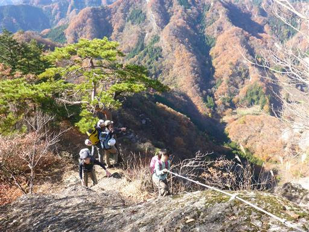
こちらは重い荷物（息子）を背負っているため非常に歩きにくい。
何より体のバランスがとりにくい。
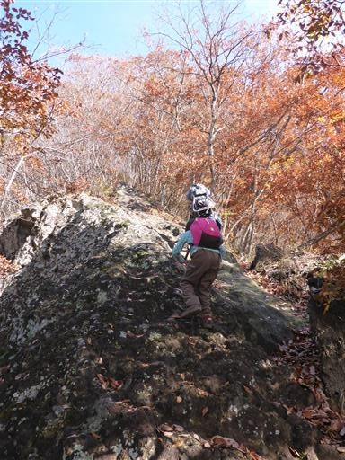
祠のある場所が分岐点になっている。ここから再び寄り道して観音岩に行ってみる。
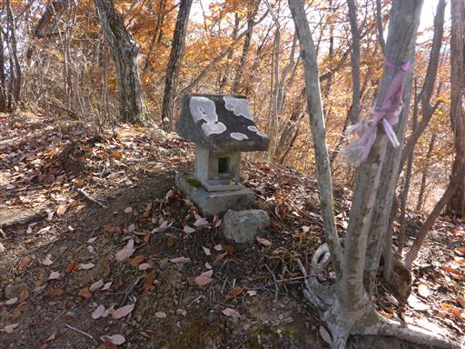
観音岩に続く尾根道もかなりの痩せ尾根だ。
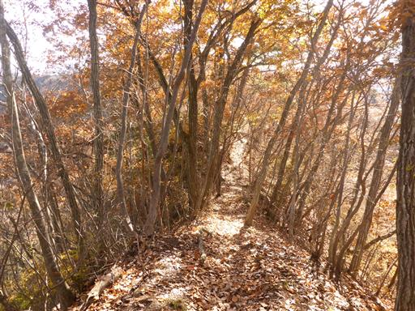
観音岩に到着する。小さな岩峰だ。
黒滝山とはこの辺りの山の総称で、黒滝山という名のピークは無い。
恐らくここが、本日の最高地点だ。
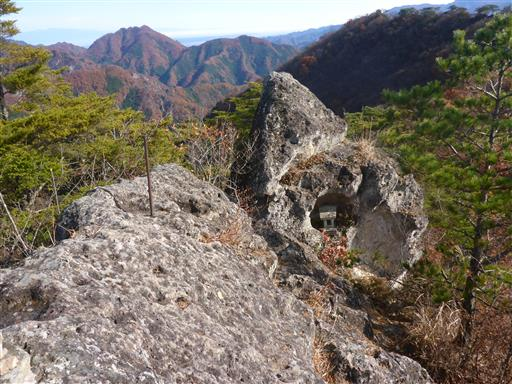
岩の上なので、遮るもののない素晴らしい展望が広がる。
妙義山の特徴的なギザギザの稜線が近くに見えている。
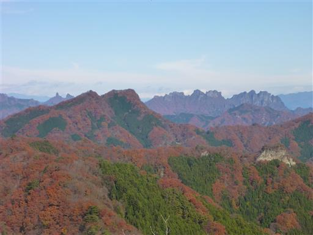
こちらは鹿岳と四ツ又山。2008年に登った懐かしい山だ。
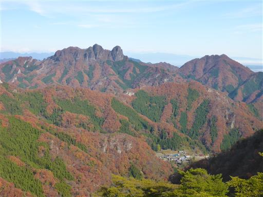
眼下には不動寺が見えている。背後に2本の岩峰が突き立っている。
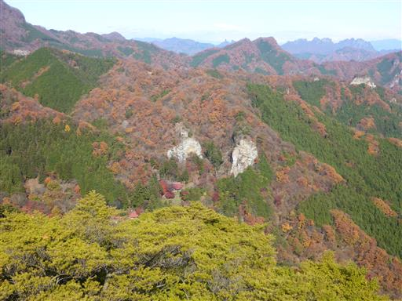
遠くに見える街は霧に覆われている。
本日は朝に関越道を走っているあいだ、ずっと霧に覆われていた。
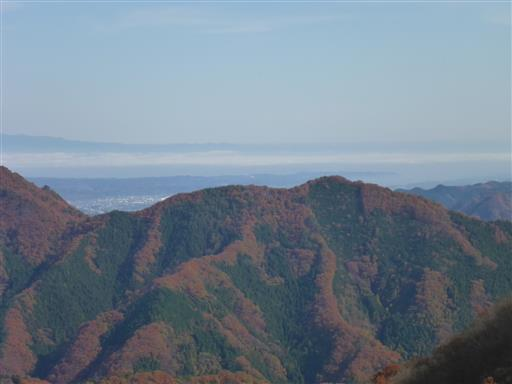
かなり狭い岩峰だが、子供達は岩のくぼみにすっぽりと収まったため、
ここで昼食をとることにする。
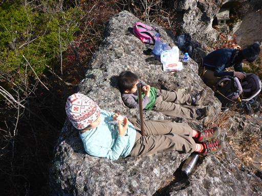
しかし周囲は崖に囲まれているため、あまり落ち着かない。
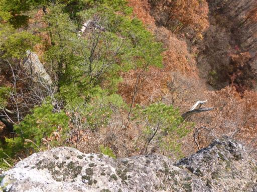
岩峰の全景。子供達がうろうろすると嫌なので、昼食をとったら早めに出発することにする。
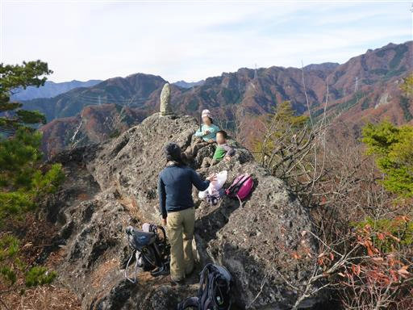
岩場に付けられたロープは枯れ木に結ばれている。大丈夫なのか、かなり不安になる。
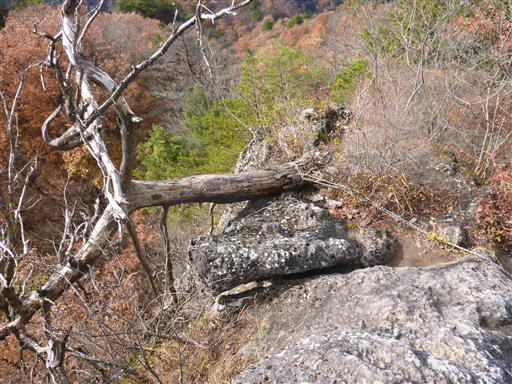
岩場に付けられたステップを慎重に下る。
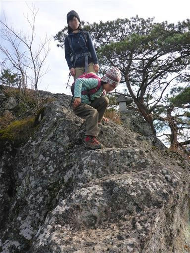
息子も少しは歩きたいようで、安全な場所は歩かせる。巨大な倒木を頑張って乗り越えている。
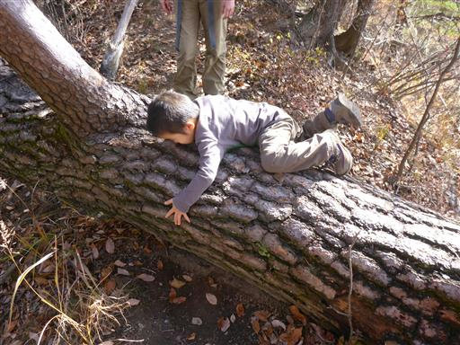
見晴台に到着。この岩に登らないとあまり展望は広がらない。
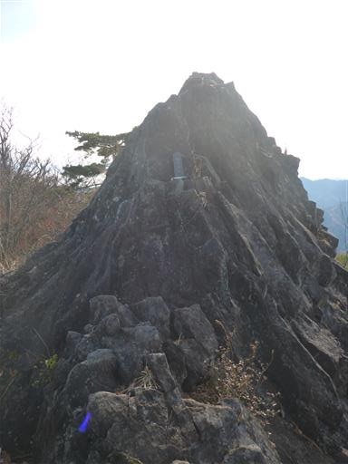
祠を乗り越えて岩の上に乗ってみる。高度感がありちょっと怖い。
360度の展望台だが、見えるものは観音岩とさほど変わらない。
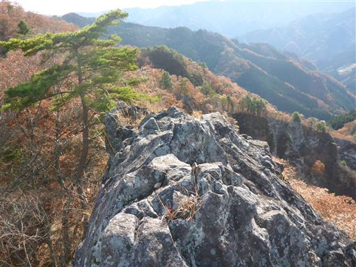
狭いトラバース道。ここも歩きにくい。
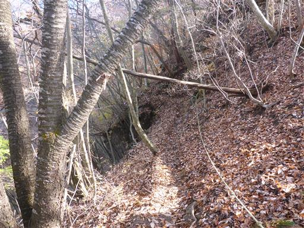
怖そうな岩場が現れる。馬の背にだいぶ近づいてきた。
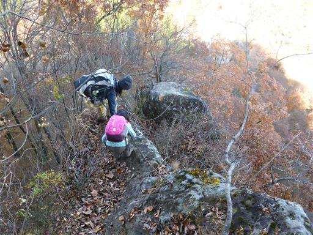
慎重に梯子を下る。
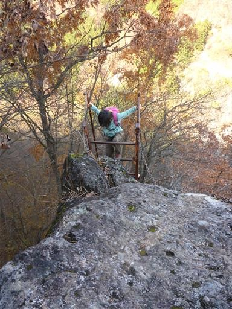
高い梯子で、それなりの高度感がある。
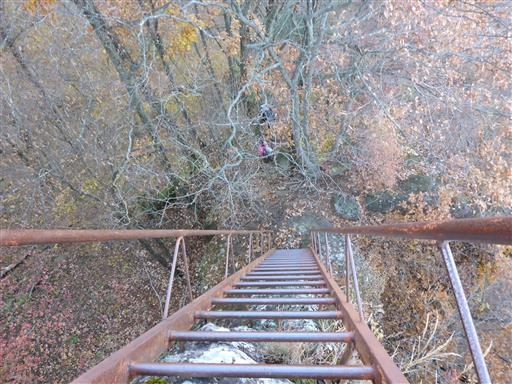
梯子は錆びて穴が開いている。大丈夫だろうか？
こんなところで梯子が壊れたら、まず助からない。
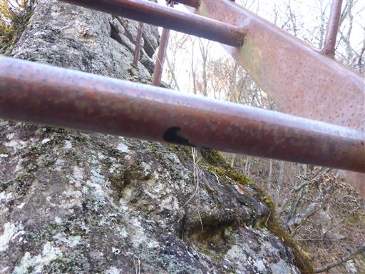
まだまだ岩場が続く。鎖をつかんでゆっくりと下る。
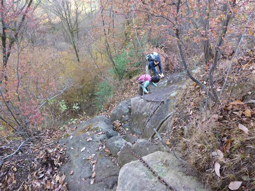
鉄梯子を架けた橋。さほど高度感は無いが、真下が見えるため結構怖い道だ。
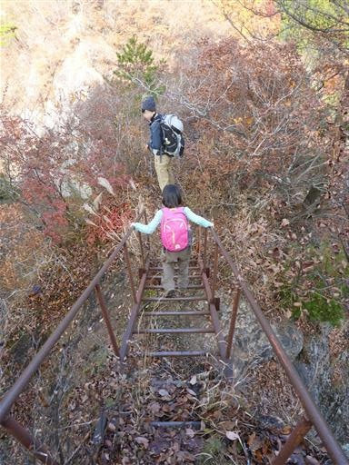
本日のハイライト、馬の背に到着。
不動寺とセットで訪れる観光地だと思っていたが、思った以上に難しい。
観光客が来るような場所ではなさそうだ。
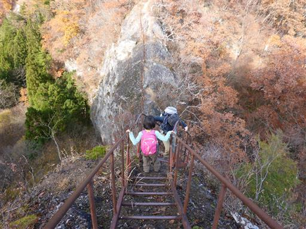
痩せた岩尾根の上を登って行く。両脇は鎖のため、一応安全は確保されている。
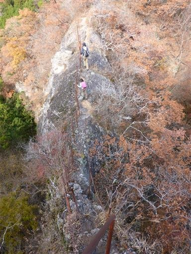
馬の背を越えると大きな道に出る。不動寺はすぐ近くなので寄って行くことにする。
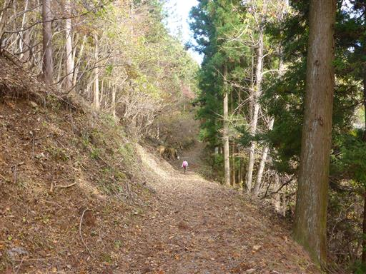
不動寺に到着。長い歴史のある古寺だ。
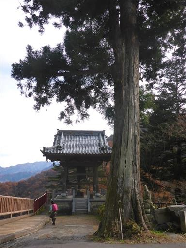
鐘楼。鐘を突くと、ゴ～～～ンという重たい音が鳴り響く。
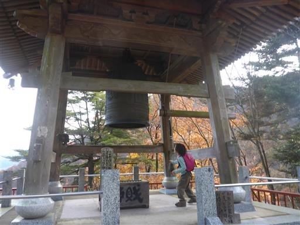
観音岩からも見えた岩峰2本が裏に聳え立っている。
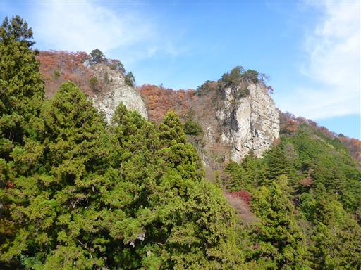
立派な山門が建っている。
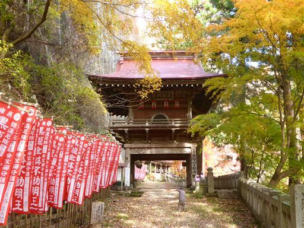
山門の中には大きな木魚が吊るされている。こんな形の木魚は初めて見た。
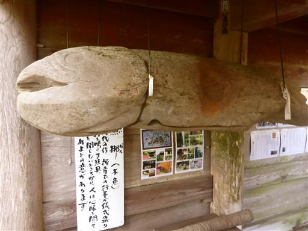
側に置かれていた棒で叩いてみる。木魚の音が鳴り響く。
大きくて重い棒なので、持つのも結構大変だ。
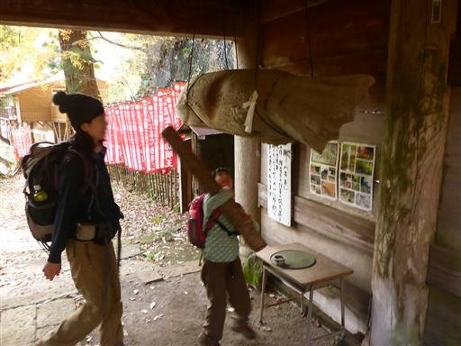
この辺りは紅葉が非常にきれい。まさに今が紅葉の盛りだ。
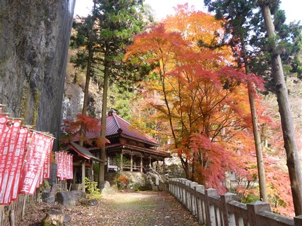
不動堂に到着。これも立派な建物だ。
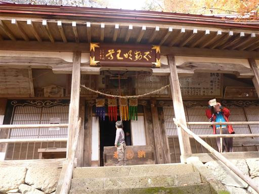
素晴らしい紅葉。山の上では紅葉はほとんど終わっていて、茶色一色だったが
気象条件の違いか、木の種類の違いか、ここの紅葉はきれいに色付いている。
龍神の滝。落差はあるが今の時期はほとんど水が流れていない。
あまり見応えの無い滝だ。
趣のある石橋。帰りはこの石橋を渡る。

大雄宝殿。かなり大きな寺で社殿がたくさんある。
この寺には宿坊もあり、宿泊することができる。
今は紅葉の季節なので、それなりに観光客が訪れている。
息子は奥にある階段を勝手にどんどん登って行く。
たどり着いたのは開山堂。境内の最奥部にあり、周囲は静まり返ってひっそりとしている。
開山堂の前には珍しい形の石灯篭が立っている。見事な彫刻だ。
階段を下る。古い階段で形が歪なので歩きにくい。
一通り見学したら、不動寺を後にして下山することにする。
恐らくこれで今年の紅葉は見納めだ。
尾根まで登り返したら、あとは半分車道のような広い道をだらだらと下って行く。
「疲れたー」と文句を言いながら歩いていた子供達だが、
岩の側にある木の階段を見つけたら急に元気になって登っている。
岩の割れ目に石像が祀られている。
後ろを見上げると馬の背の岩尾根が見える。両脇の鎖までよく見えている。
ついさっきまで、あそこを歩いていたのだ。
このまま車道のような道が集落まで続く。道が濡れていて少し滑りやすい。
駐車場から見えていた岩山が間近に見えてくる。この辺りは岩山だらけだ。
上底瀬の集落に下山する。静かでのどかな集落だ。
黒滝山は岩場が多く高度感もあり、面白い山だった。
娘も久しぶりに岩山を歩けて「楽しかった」と言っていた。
子供を歩かせるには怖い山だが、たまには岩山に行くのも良いかもしれない。